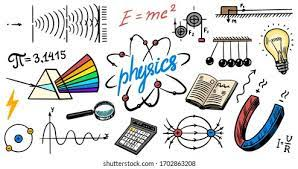

¿Que es la fisica?
La física, del griego fisis (naturaleza), es la ciencia natural que estudia, mediante leyes fundamentales, la energía, la materia, el tiempo y el espacio, es decir, el universo mismo.
La física es una de las disciplinas académicas más antiguas, cuyas raíces se remontan a los inicios de la civilización, cuando el hombre empezó a tratar de entender las fuerzas que regían el mundo a su alrededor.
Se trata de una disciplina tanto teórica (describe las leyes del universo) como experimental (pone en práctica de hipótesis respecto a dichas leyes), y se adhiere al modelo de comprobación y legitimación impulsado por el método científico. Es una de las ciencias fundamentales o centrales que existen, y dentro de su campo de estudio convergen a menudo la química, la biología y la electrónica, entre otras.
Inicialmente la física formaba parte, como tantas otras ciencias, de la filosofía o la filosofía natural de la antigüedad, pero a partir de la Revolución Científica del siglo XVII surgió como un campo independiente, interesado en las leyes fundamentales de la realidad y empleando el lenguaje formal de las matemáticas para expresarlas. En la actualidad, en cambio, la física es una de las disciplinas que más contribuye con el cambio del paradigma científico, industrial y tecnológico.

Menu